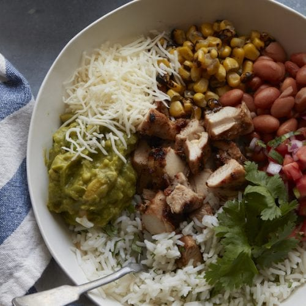

Chiptole Burrito Bowl

Ingredients
For the Chicken
- 1 tablespoon vegetable oil
- 2 chipotle peppers in adobo finely chopped
- 1 teaspoon garlic powder
- 1 teaspoon ground cumin
- 1/2 teaspoon dried oregano
- 1/2 teaspoon black pepper
- 4 boneless skinless chicken thighs (or 3 boneless, skinless chicken breasts)
For the Rice
- 1 teaspoon vegetable oil
- 1 cup white basmati rice
- 2 cups water
- 1 lime
- 2 tablespoons freshly chopped cilantro
- kosher salt to taste
For the Toppings
- 1 cup pinto beans warmed
- 1 cup frozen charred corn warmed
- 1 cup guacamole
- 1 cup pico de gallo
- 1/2 - 3/4 cup finely shredded monterey jack cheese
Instructions
For the Chicken
- Combine the vegetable oil, chopped chipotle peppers in adobo, garlic powder, cumin, dried oregano, and black pepper in a small bowl and stir to combine.
- Place the chicken in a large zip top plastic bag and add the marinade. Zip the bag and mix the chicken into the marinade. Place it into the fridge and let it marinate for at least 1 hour.
- Heat an indoor or outdoor grill to about 400 degrees F (medium high heat). Remove the chicken from the marinade and season with salt and pepper. Place the chicken onto the grill and grill 5 to 6 minutes per side, until the chicken is cooked. Remove the chicken from the grill and let rest for 10 minutes. Chop the chicken into small bite sized pieces and use as needed.
For the Rice
- In a heavy saucepan, heat the oil over medium heat. Once hot, add the white rice and lime juice and sauté for 60 seconds to toast the rice.
- Add the water and bring the rice to a boil. Cover and reduce the heat to low and cook until the rice is tender and all the water is absorbed.
- Add in the cilantro and fluff rice with a fork.
To assemble
- Arrange equal parts of the white rice and chopped grilled chicken in 4 bowls. Top with equal parts of the pinto beans, corn, guacamole, pico and cheese. Season with salt and pepper as needed and serve immediately.